Avatar Personale
Il mio percorso nel character design e nella modellazione 3D ha avuto inizio con lo sviluppo del mio avatar personale. Attraverso molteplici iterazioni ed evoluzioni tecniche, ho lavorato per preservare e consolidare nel tempo una serie di tratti stilistici distintivi e fortemente caratterizzanti, garantendo un'identità visiva coerente, riconoscibile ed iconica in ciascuna delle sue versioni.
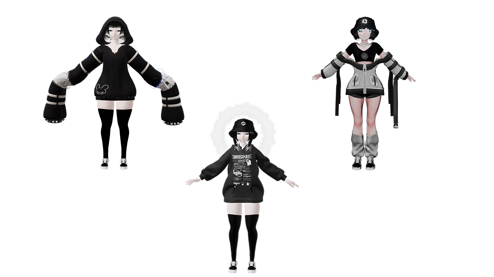
Avatar: Pubblici & Commerciali
Modelli Pubblici (Free Access)
Una collezione di modelli tridimensionali nati come esercizio di stile, studio anatomico e ottimizzazione dei pesi, successivamente rilasciati in modalità free-access all'interno del metaverso di VRChat per l'utilizzo libero da parte della community.
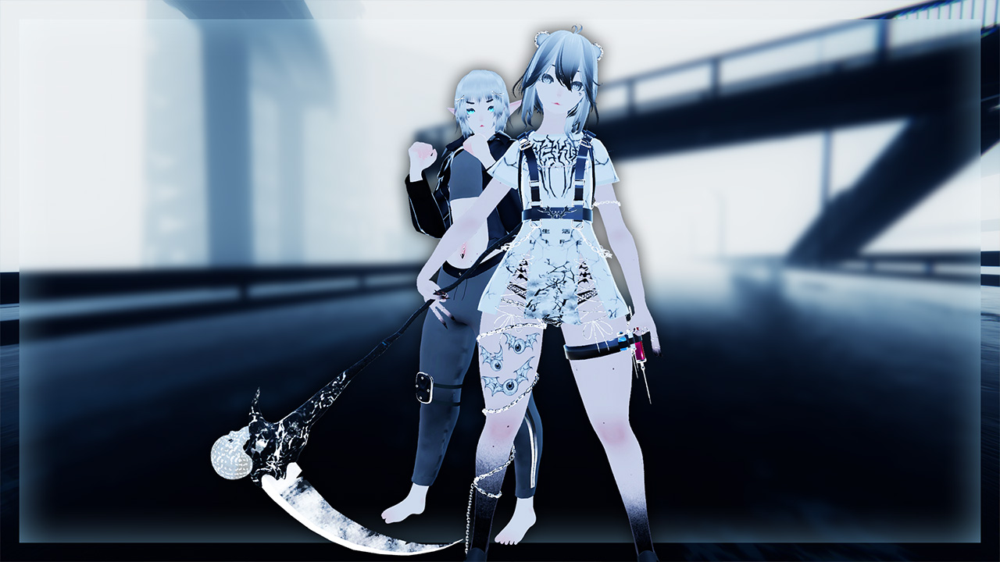
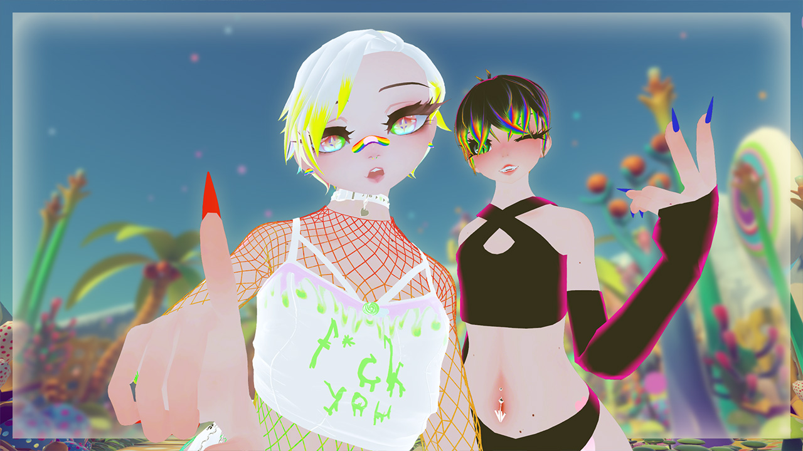
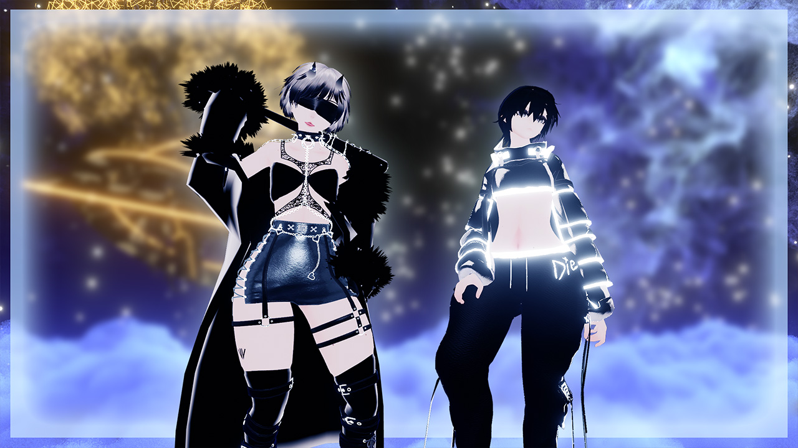
Modelli in Vendita (Store Releases)
Progetti commerciali completati nel corso del 2024. Questi asset nascono come diretta evoluzione e sintesi di tutte le sperimentazioni tecniche ed estetiche maturate in precedenza sui modelli personali e pubblici, ottimizzati per offrire massima stabilità prestazionale e una resa visiva premium.
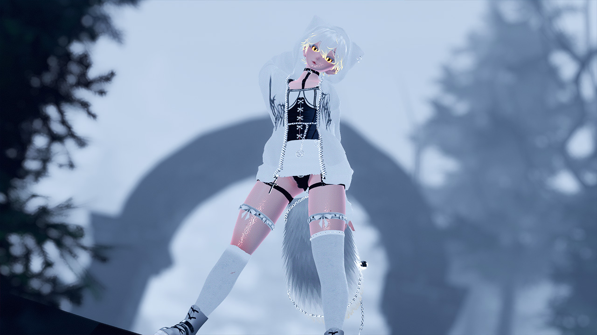
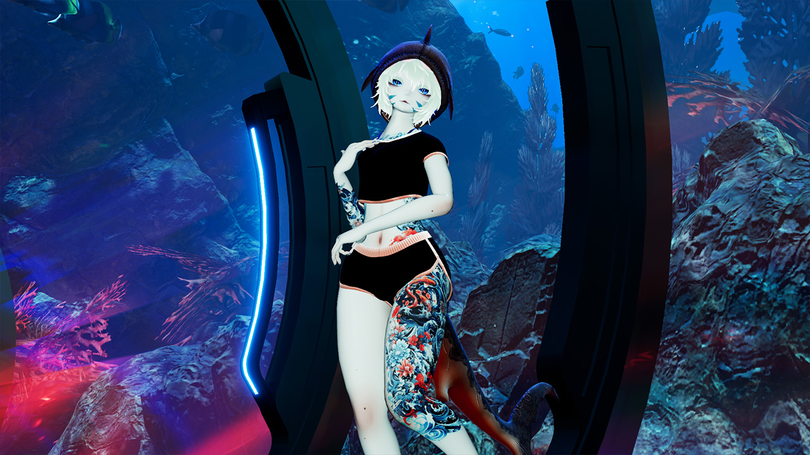
Mondi Avatar Pubblici
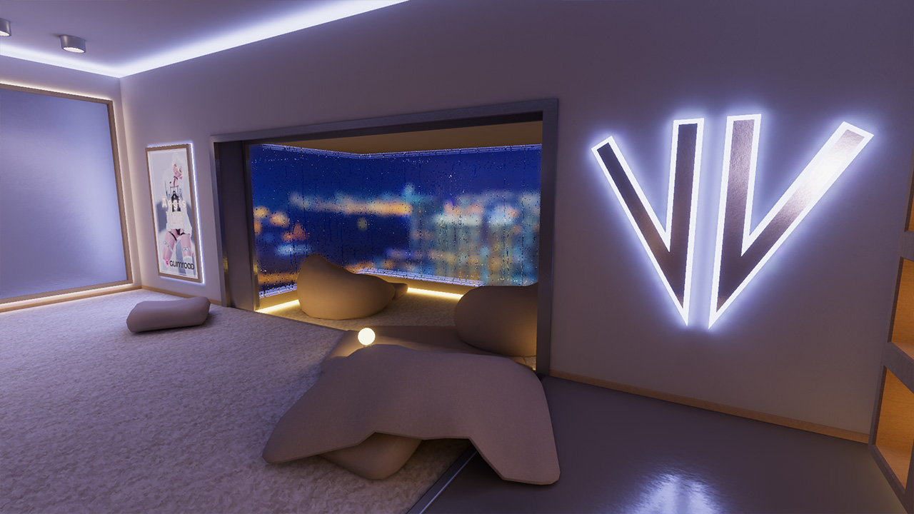
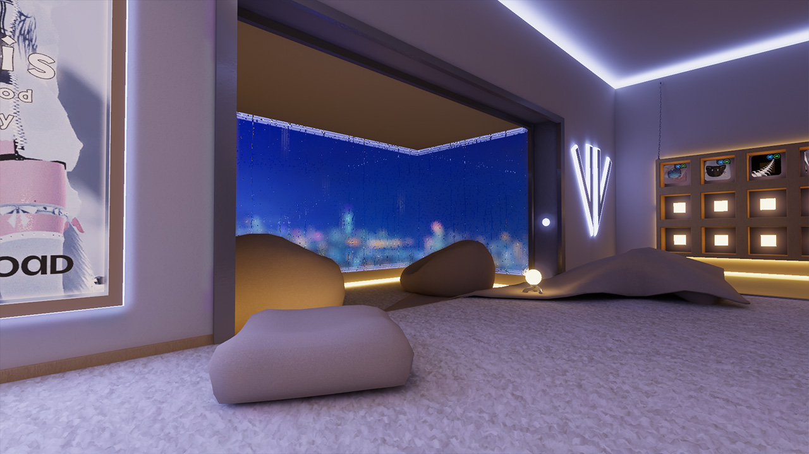
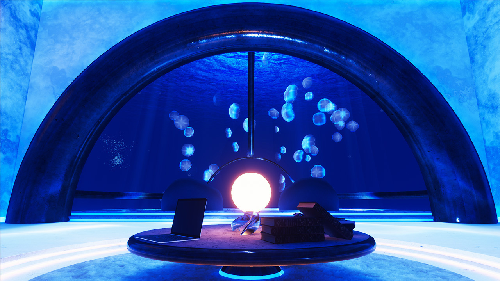
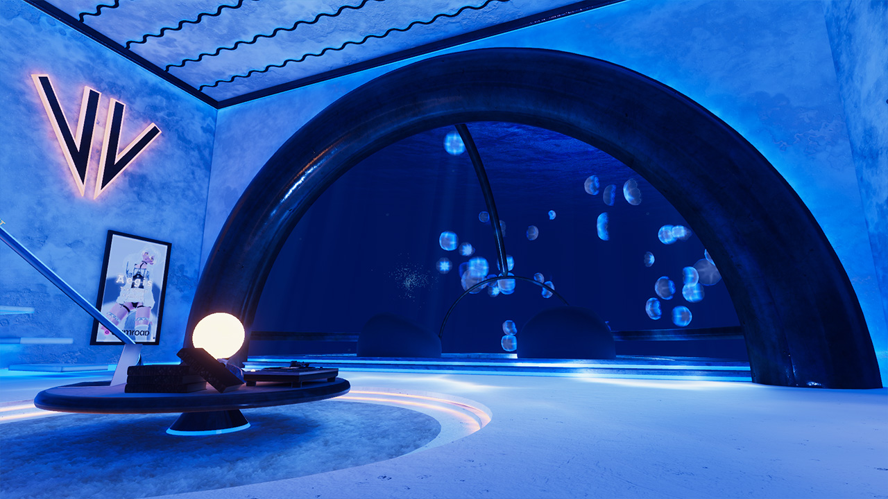
Kuni Structure N°1
Un'installazione virtuale site-specific realizzata in occasione del festival "Santa Venere - Media Art Meeting". Il progetto si sviluppa attorno a una minimale ed evocativa struttura sottomarina che custodisce un maestoso albero sintetico al proprio centro. Uno spazio etereo e sommerso, concepito come un rifugio per la meditazione e il rilassamento mentale, o forse come una prigione concettuale isolata dal resto del mondo reale.
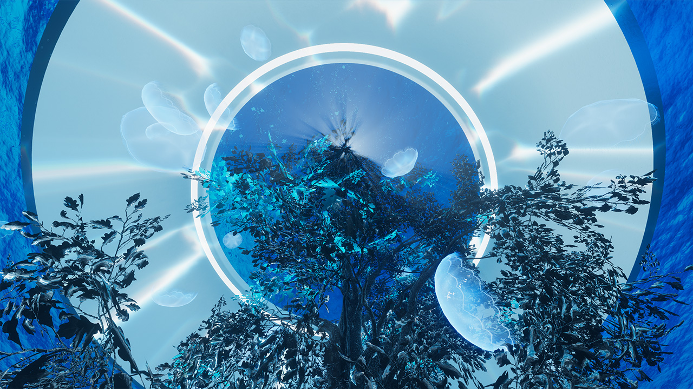
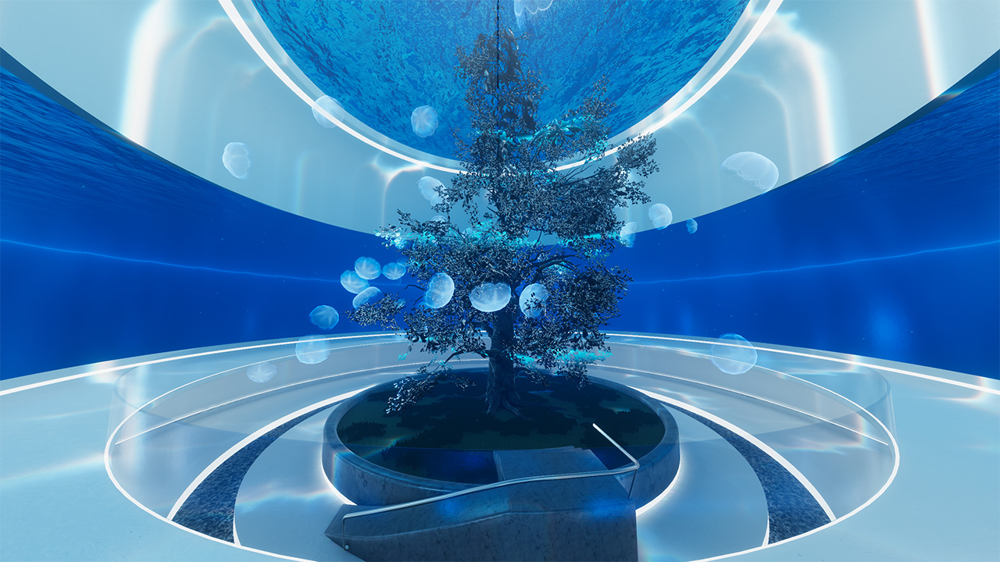